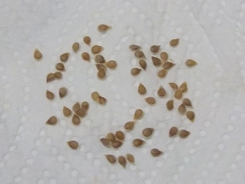
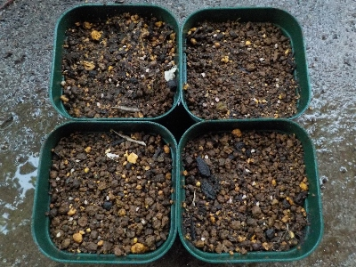

更新日 : 2026/05/18

おつとめ品だけど傷んでないトマトがあったので買いました。熟れすぎてるので張りがなく、おつとめ品らしい商品でした。トマトはフレッシュなモノがいいなと実感しました。
熟れてるのでタネ蒔いたら育つと思い、タネを収穫しました。
タネに付いてるゼリーっぽいのを手の上で転がしながら取ったんですが、手が水分をドンドン吸収するのが見て分かりました。人の体って面白いって思いました。
更新日 : 2026/05/21

実生の種蒔きって発芽するか分からないのでドキドキしていいですね。
遊んで楽しんでる感じがして好きです。
食べ物からタネを採ったとしても、普通に苗は買います。
【おいしいものを食べよう。】【たくさん寝よう。】
【ソロ活をしよう!】【季節感のあることをしよう。】【動画視聴はほどほどに。】【当サイトの全てのコンテンツは無断転載禁止です。】